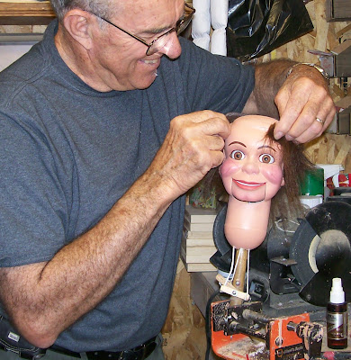
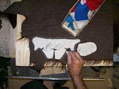

'60s Danny O'Day (Juro)
7/6/2009
{kind=link}

{kind=link}
When this 1960's Juro Danny O'Day came in for an upgrade (mouth repair, moving eyes, painting and wig) it brought back many memories. When Juro still had this doll in production I bought many of them for such upgrades. So many, in fact, that when Juro Co. decided to discontinue production of the doll in the early '70s (despite my pleas that they not do so), Vivian Jupiter called me one day with an offer to sell me all their several hundred remaining heads at a very fair quantity price. It only took me half a minute to decide to accept her offer; it took me considerably longer to come up with a way in which to pay for all of them! Those were fun days.
Now, 35+ years later, when it came time to make a wig for
{kind=link}

Danny, it didn't surprise me at all to find my original felt wig pattern for making this particular figure's wig! (I'm often asked where I get me wigs and patterns. Well, I have to make them. And since it takes a bit of extra time to create a pattern, I never throw them out because I never know when I might need it again. Such was the case with this guy.)